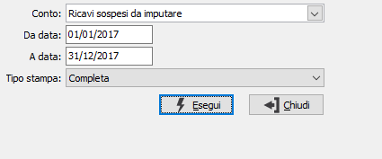

Controllo movimenti transitori
Il programma effettua una stampa da utilizzare per controllare i movimenti transitori inseriti relativamente ai costi o ricavi sospesi.

CONTO: combo box per definire il tipo di conto da analizzare. Valori ammessi:
Costi sospesi da imputare
Ricavi sospesi da imputare
DA DATA: indicare la data dalla quale deve iniziare l'elaborazione. Viene proposta automaticamente la data di inizio esercizio.
A DATA: indicare la data alla quale deve terminare l'elaborazione.
TIPO STAMPA: Definisce il tipo di stampa di controllo che si intende attivare.
Completa: riporta l'elenco di tutti i clienti/fornitori (in base al valore selezionato nel "Conto")
Solo conti con saldo diverso da zero: riporta l'elenco dei clienti/fornitori (in base al valore selezionato nel "Conto") con saldo finale diverso da zero
Per contropartita: riporta l'elenco delle contropartite di costo/ricavo (in base al valore selezionato nel "Conto") presenti nei documenti per la parte da girocontare.
Inseriti tutti i parametri, la pressione del bottone Esegui determina l’esecuzione della stampa.